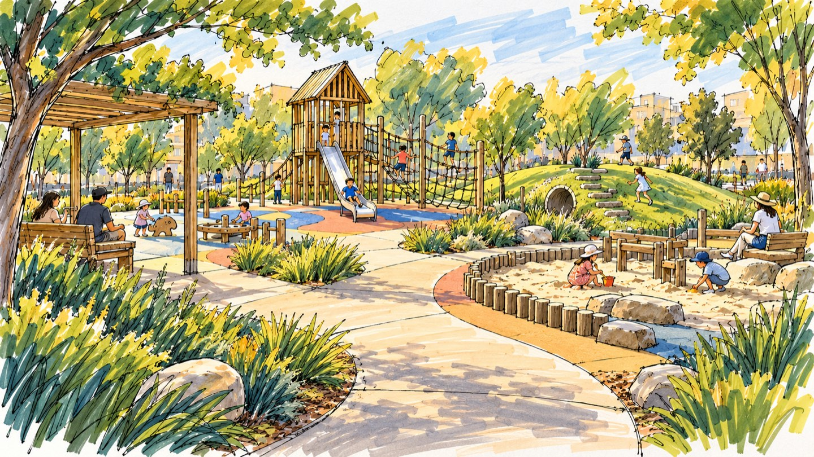
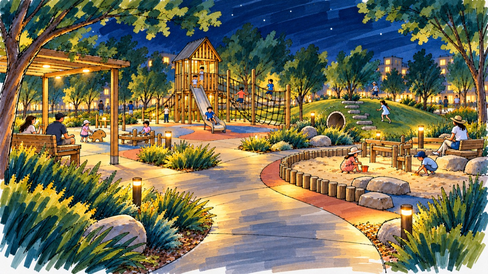

彩色总平面
Colored Site Plan
场地边界、功能分区、园路体系与植物结构；约束图例、指北针与比例尺。


Colored Site Plan
场地边界、功能分区、园路体系与植物结构；约束图例、指北针与比例尺。
Perspective Sketch
空间层次、视平线与比例人，建立乔灌草竖向关系与统一的光影方向。
Section & Elevation
表达相对高差与剖切关系，呈现驳岸及铺装构造的概念级示意。
Concept Diagram
梳理流线、功能分区、视线通廊与日照示意；聚焦设计逻辑，非工程计算。
Seasonal Mood Study
固定平面布局与镜头，仅切换植物季相、色温与照明，保持方案可比性。
Architectural marker sketch of a 40 × 30 m children's playground, separate age-based activity zones, retained landform and sandpit, layered trees, shrubs and groundcover, eye-level perspective, early summer evening, consistent light direction…
场地类型、规模、季节时段、表现风格与视图类型。每次最多追问 2 项，缺项可使用默认值。
选择 plan-view、perspective-sketch、section-elevation、concept-diagram 或 seasonal-mood。
风格前缀 + 场景描述 + 技术约束 + 负面词。将视角、比例、构图与画幅明确写入。
核对比例人、乔灌草分层、铺装宽度暗示、水体倒影与统一光源；彩平检查指北针、比例尺和图例。
git clone https://github.com/buu206/landscape-sketch-skill.git .agents/skills/landscape-sketch$landscape-sketch 帮我生成滨水步道水彩彩平提示词